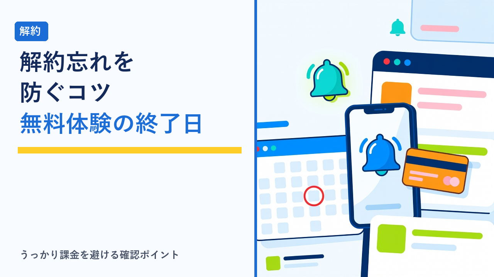
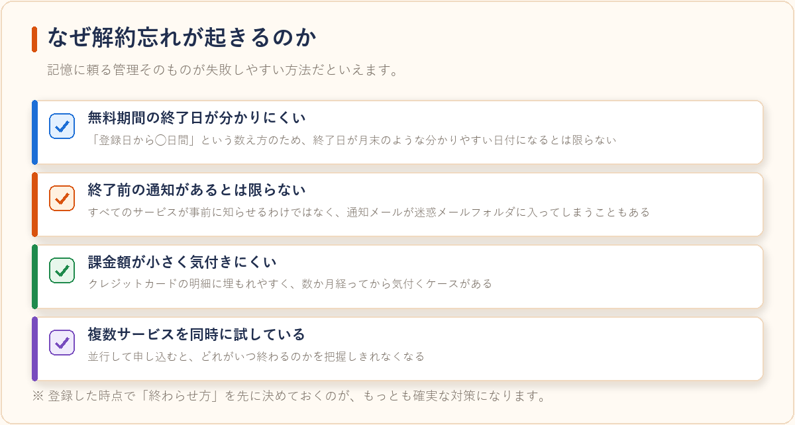
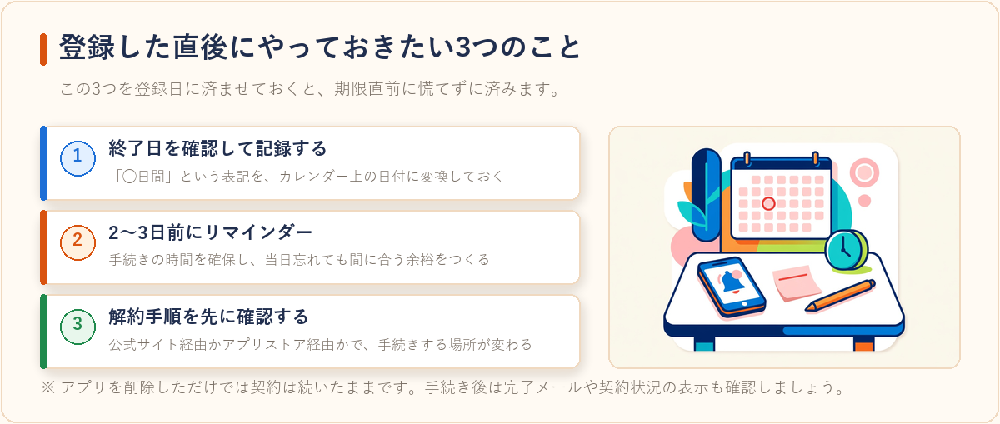
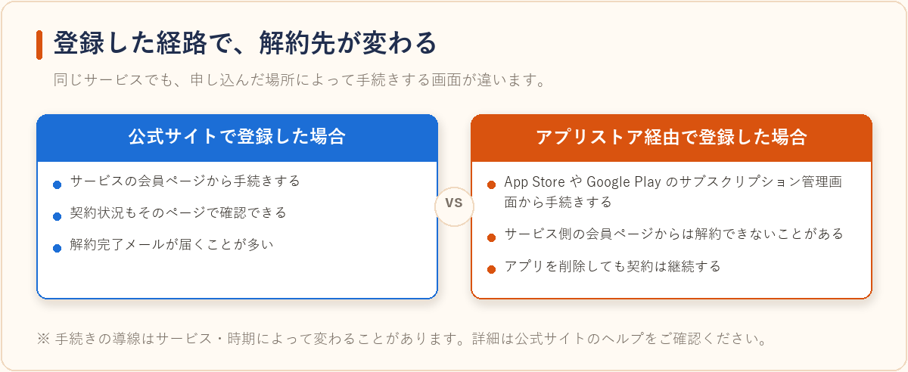
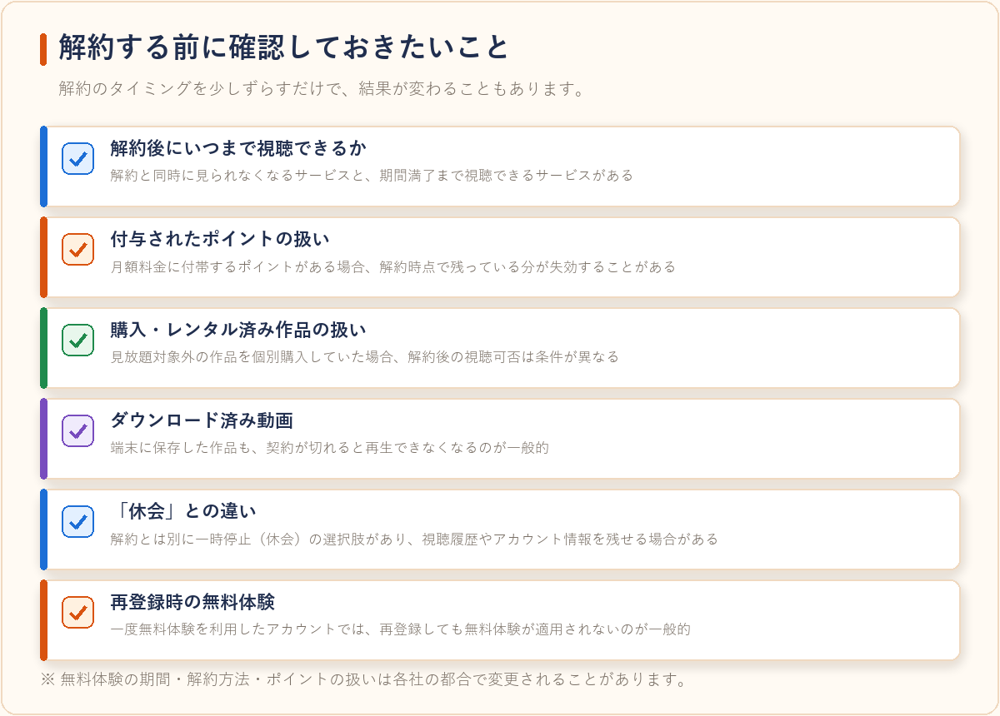

VODサービスの解約忘れを防ぐコツと注意点まとめ
2026-08-01 更新

動画配信サービス（VOD）の多くは無料体験期間を用意しており、期間内に解約すれば料金がかからない仕組みになっています。ただし、この仕組みは「自分で解約手続きをしない限り、自動的に有料契約へ移行する」という前提で成り立っています。見たい作品を見終えたあとにそのまま放置してしまい、気付かないうちに月額料金が発生していた、というのは無料体験でよくあるつまずきです。ここでは、解約忘れを防ぐための具体的な管理方法と、解約前に確認しておきたい注意点を整理しました。
なぜ解約忘れが起きるのか
解約忘れの原因は、単純な物忘れだけではありません。仕組みの側にも、忘れやすくなる要因がいくつかあります。
- 無料期間の終了日が分かりにくい：「登録日から◯日間」という数え方のため、終了日が月末や給料日のような分かりやすい日付になるとは限りません。
- 終了前の通知があるとは限らない：期間終了の数日前にメールで知らせてくれるサービスもありますが、すべてのサービスが通知するわけではなく、通知メールが迷惑メールフォルダに入ってしまうこともあります。
- 課金額が小さく気付きにくい：月額数百円〜二千円程度の請求はクレジットカードの明細に埋もれやすく、数か月経ってから気付くケースがあります。
- 複数サービスを同時に試している：無料体験をいくつか並行して申し込むと、どれがいつ終わるのかを把握しきれなくなります。
つまり、記憶に頼る管理そのものが失敗しやすい方法だといえます。登録した時点で「終わらせ方」を先に決めておくのが、もっとも確実な対策です。

登録した直後にやっておきたい3つのこと
解約忘れの対策は、解約直前ではなく登録直後に済ませてしまうのが効率的です。

| やること | 内容 | ねらい |
|---|---|---|
| 1. 終了日を確認して記録する | 会員ページの契約情報から無料期間の終了日を確認し、メモやカレンダーに書き出す | 「◯日間」という表記を具体的な日付に変換しておく |
| 2. 2〜3日前にリマインダーを設定 | スマートフォンのカレンダーやリマインダーアプリに通知を登録する | 手続きの時間を確保し、当日忘れても間に合う余裕を作る |
| 3. 解約手順を先に確認する | 解約ページの場所と、必要な操作（アプリ／ブラウザ／ストア経由）を確認しておく | 期限直前に手順が分からず慌てる事態を防ぐ |
特に3つ目は見落とされがちです。契約した経路によって解約先が変わるサービスがあり、公式サイトで登録した場合は会員ページから、アプリストア経由で登録した場合はApp StoreやGoogle Playのサブスクリプション管理画面から手続きする、といった違いが生じます。アプリを削除しただけでは契約は続いたままになるため、この点は登録時に確認しておく価値があります。

複数サービスを試すときの管理方法
無料体験を比較目的でいくつか申し込む場合は、次のように整理しておくと管理しやすくなります。
- 一覧表を作る：サービス名・登録日・無料期間終了日・登録経路・月額料金をメモアプリや表計算ソフトにまとめておく
- 登録日をずらす：同時に複数登録せず、1つずつ試すと終了日が重ならず判断しやすくなる
- 登録に使うメールアドレスを揃える：通知メールが分散せず、検索でまとめて確認できる
- 明細を月1回チェックする：クレジットカードや決済アプリの明細を月末に見る習慣をつけると、見落としに早く気付ける
解約する前に確認しておきたいこと
解約手続き自体は数分で終わることが多いものの、事前に把握しておかないと損をしやすいポイントがあります。
- 解約後にいつまで視聴できるか：解約と同時に視聴できなくなるサービスと、期間満了まで視聴できるサービスがあります。
- 付与されたポイントの扱い：月額料金に付帯するポイントが付与されるサービスでは、解約時点で残っているポイントが失効することがあります。
- 購入・レンタル済みの作品の扱い：見放題対象外の作品を個別購入していた場合、解約後の視聴可否は条件が異なります。
- ダウンロード済み動画：端末に保存した作品も、契約が切れると再生できなくなるのが一般的です。
- 「休会」との違い：サービスによっては解約とは別に一時停止（休会）の選択肢があり、視聴履歴やアカウント情報を残せる場合があります。
- 再登録時の無料体験：一度無料体験を利用したアカウントでは、再登録しても無料体験が適用されないのが一般的です。
「今月は見る時間が取れないが、来月はまた使いたい」という場合は、いったん解約して必要なときに再契約するほうが総額を抑えられることもあります。判断のためにも、月にどのくらい視聴したかを振り返ってから手続きするとよいでしょう。

手続きが完了したかどうかの確認
解約操作をしたつもりでも、最終確認ボタンを押していなかったために契約が継続していた、というケースもあります。手続きのあとは次の点を確認しておくと確実です。
- 解約完了メールが届いているか
- 会員ページの契約状況が「解約済み」または「◯月◯日まで利用可能」になっているか
- 最終確認ボタンまで押し切れているか（途中で止まっていると契約は続きます）
- 念のため、完了画面のスクリーンショットを残しておく
注意：無料体験の期間・解約方法・ポイントの扱いは各社の都合で変更されることがあります。申し込み前および解約前に、必ず公式サイトで最新の条件をご確認ください。
よくある質問
解約とアプリの削除、どちらを先にすればいいですか？
先に解約手続きを済ませてからアプリを削除するのが確実です。アプリを削除しただけでは契約自体は継続しているサービスがほとんどのため、削除前に会員ページやアプリストアの管理画面で解約完了を確認しておきましょう。
無料体験の途中で解約すると、すぐに見られなくなりますか？
サービスによって異なります。解約と同時に視聴できなくなるサービスもあれば、無料期間の満了日までは引き続き視聴できるサービスもあります。解約前に「いつまで視聴できるか」の表示を確認しておくと安心です。
解約後にもう一度同じサービスの無料体験を使えますか？
一般的には、一度無料体験を利用したアカウントは再度の無料体験対象外になることが多いです。ただし条件はサービスごとに異なるため、気になる場合は公式サイトのFAQで確認してみてください。動画配信サービス自体の比較については動画配信サービスの無料体験まとめ比較もあわせてご覧ください。